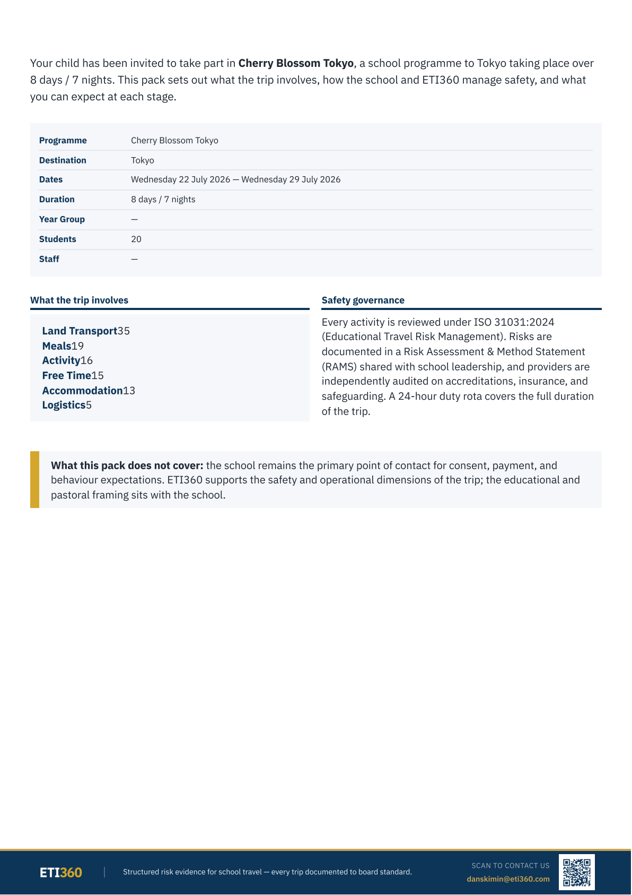
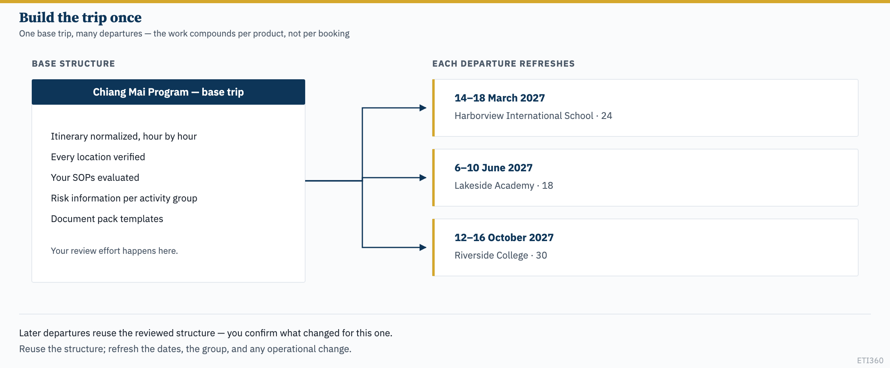
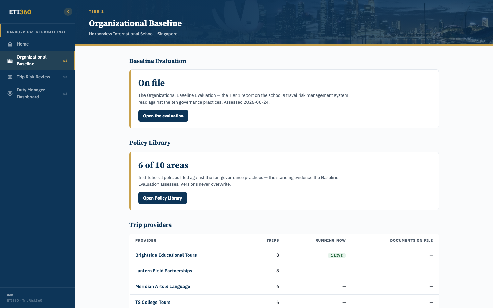
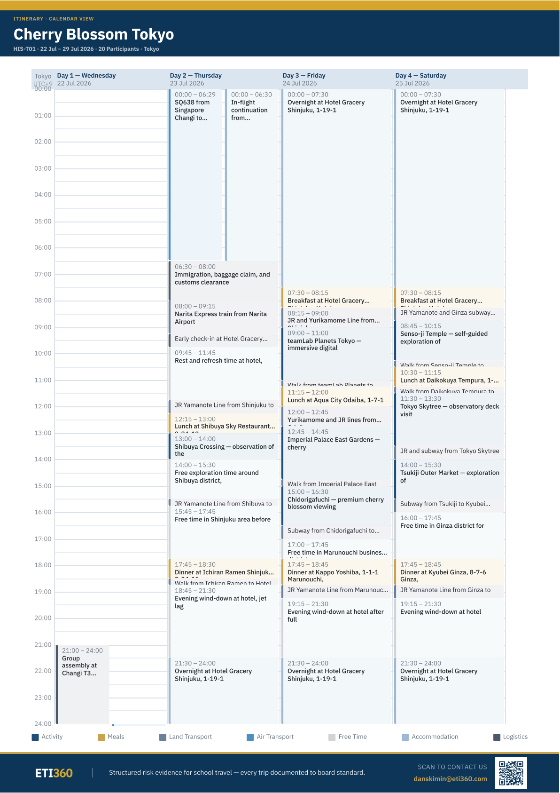
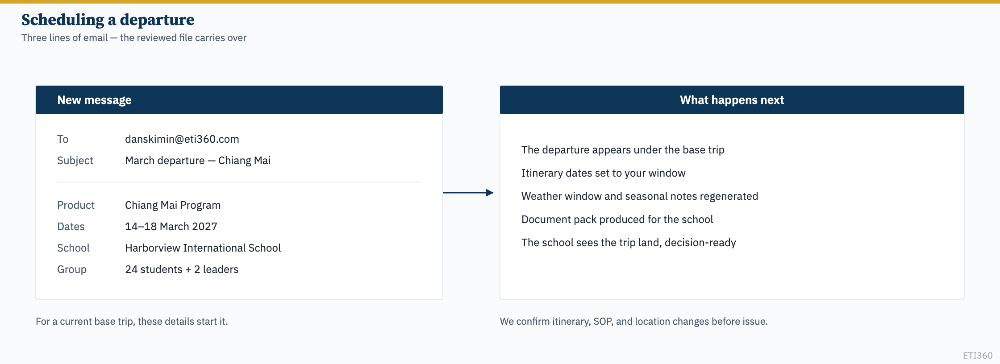
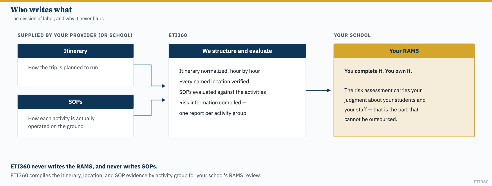
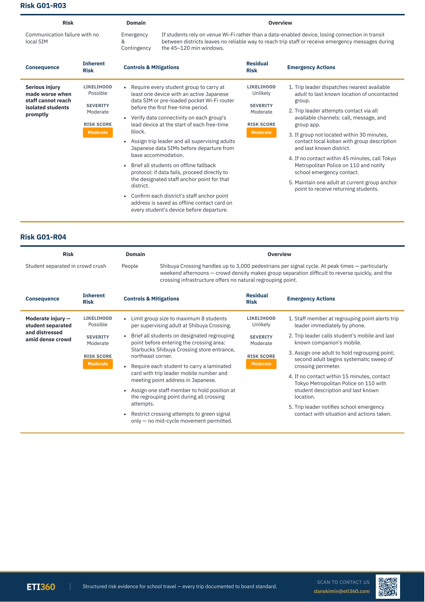
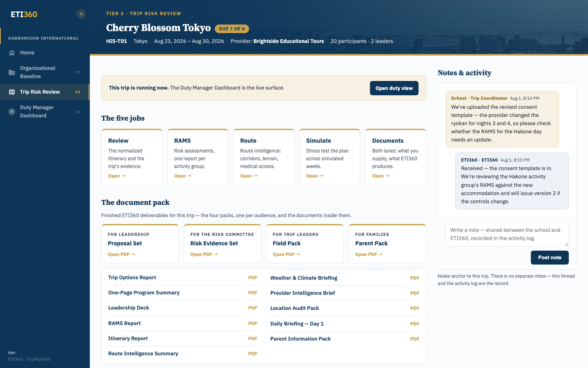

You run the same trips season after season. ETI360 builds each of your products once — the itinerary normalized hour by hour, every location verified, your SOPs evaluated, the risk information compiled per activity group — and every departure after that starts from that reviewed file. What your school clients receive is your trip, documented for the people who have to act on it: their leadership, their risk committee, their trip leaders, and their families.
This guide is for provider operations staff. The core difference from the schools guide: your trips repeat, so the work compounds per product, not per departure — and almost all of your side of it happens by email.

This is the most important section in the guide. Each of your products — the five-day Chiang Mai program, the Khao Sok expedition — becomes a base trip: one reviewed file holding the normalized itinerary, the verified locations, your evaluated SOPs, and the compiled risk information. A departure is that base trip with dates and a school attached. What carries over is the structure; the dates, the group, and anything you have changed since are new each time.
The review effort happens once per product. Later departures reuse that structure: we update the dates and the seasonal information, and you confirm anything that has changed in the itinerary, the SOPs, or the locations before the file is issued to the school.
The division of labor holds here exactly as it does school-side, and it never blurs:
| Document | Who writes it | What ETI360 does |
|---|---|---|
| Itinerary | You | We normalize it hour by hour and verify every location |
| SOPs | You — they describe your operation | We evaluate them against the product's activities |
| Risk information | ETI360 compiles it, per activity group | — built from your itinerary and SOPs |
| RAMS | Each school, from that information | Never us, never you on their behalf |

Your entire side of the relationship runs through danskimin@eti360.com: your itineraries, your SOPs, your departure dates, your answers to verification questions. Documents in whatever format you already use — nothing needs reformatting, and there is no portal you're required to operate.
Where your work becomes visible is your school clients' portals: your organization on their provider register, your trips in their lists, your name on every trip header, and the document packs built from your itineraries. When a school and ETI360 discuss one of your departures, it happens on that trip's notes thread — anything needing your word comes to you by email, and your answer is recorded with the trip.

| Term | Definition |
|---|---|
| Base trip | One of your products as a reviewed trip file: itinerary, verified locations, evaluated SOPs, risk information |
| Departure | A base trip with dates and a school group attached |
| Itinerary | The normalized, gap-free day-by-day record of the product — every hour, transit included |
| SOP | Your Standard Operating Procedure for an activity — you write it, ETI360 evaluates it |
| Risk information | ETI360's compiled evidence per activity group — what each school completes its own RAMS from |
| Activity group | Activities that run as one operation and share controls — the trek is one group, the city days another |
| Location verification | ETI360's check that every named venue, route, and facility is what the itinerary says it is |
| Issued version | The dated version ETI360 files in the trip record; formal approval stays in each party's own process |
Send your product list
The trips you run, in whatever format your sales materials already use.
Send an itinerary per product
Your standard version — the one you'd send a school. SOPs too, if they're at hand; if not, we'll ask for them per product as we build (section 9).
We set up and build
Your organization record, then one base trip per product, starting wherever you say the next booking is. As each is ready, we send it back for the review only you can do: is this how the trip actually runs?
Corrections at this stage are the work going right, not friction — each one updates the base trip and applies to future departures where it still holds.
A new product any time after onboarding works the same way: email the itinerary and the SOPs that cover its activities. We normalize, verify every location, evaluate the SOPs, and compile the risk information per activity group — then you review the result against how you actually run it.

The normalized view expands each block of your itinerary into the scheduled activity, the transitions, the meals, and the places: "morning: temple visit" becomes who is where for every hour, with the walk, the lunch, and the train accounted for. Your review confirms that the structured record matches the operation.
A school books your March departure. You send us three things: the product, the dates, the school and rough numbers. For a current base trip, that starts it.
What happens on our side: the departure appears under the base trip; the dated material regenerates for those dates — itinerary dates, the weather window, seasonal notes in the risk information; and the school sees the trip land in their portal, decision-ready. If the school contacts us first, we'll confirm the details with you — same three lines, opposite direction.

During each build we verify every location the itinerary names — the venue exists, the route is the route, the hotel is where the hotel is. Where the product moves through an area, we ask you one question: which medical facilities would you use? You know the ground; we verify what you name. ETI360 verifies — it does not recommend. The facilities are your operational choices, and the verified record carries them into the risk information and onto the Duty Manager Dashboard.
The verification request arrives by email with the locations listed per area, and the points needing your confirmation named.
Your SOPs are the authoritative account of how you run each activity — group sizes, briefings, equipment checks, the calls your guides make. We never write them; a procedure only works if it describes what the operator actually does. What we do is evaluate them against the product's activities and build the risk information on them.


Read the controls column as a mirror: it says what your documentation says. If it doesn't match how you actually operate, that's the finding — either the SOP needs revising or our evaluation does. You decide which, send us the current version, and we update the compiled risk information at the base trip.
When the operation changes, tell us. A new put-in point, a different vehicle operator, revised ratios: send the updated SOP or describe the change, and we re-evaluate and refile the risk information, versioned. Schools with upcoming departures see the revision flagged — their RAMS review picks up exactly what moved.
Every departure produces a document pack for the school, bundled by audience: a Proposal Set for leadership, a Risk Evidence Set for the risk committee, a Field Pack for trip leaders, a Parent Pack for families. All of it is built from your itinerary and your SOPs — your trip, told for each reader.

Two things in that view involve you directly. The Supplied lane holds what you and the school have shared — your itinerary and SOPs live there, versioned. And the issued record: when ETI360 issues a deliverable, the portal files its version and issue date. Your operational confirmation and the school's formal approval stay in your own processes — what the record shows is which version was issued, and when.
On travel days the departure runs on the school's Duty Manager Dashboard: their duty manager works from the day's plan in your itinerary, the check-in windows set for the trip, and the forecast for the places it names. Your guides and trip leader are where those check-ins and messages come from.
What this asks of your operation is mostly what you already do: keep the check-in rhythm, and when something happens, communicate early — the school's duty manager works from what's logged, and your calls become part of one timestamped record rather than scattered phone histories. If an incident involves your operation, the record you and the school build together during the event is the record both of you will rely on afterward.
The full duty-desk manual is the Duty Manager Dashboard guide; the Duty Manager Simulation is how school duty teams rehearse — on scenarios built from real products like yours.
- A document shows your operation wrong. Email us what's off. The fix lands in the base trip, the affected documents regenerate, and every future departure inherits it.
- A departure shows the wrong dates. Same — one email; the dated material regenerates.
- A school asks you for something ETI360 already holds. Point them at their portal's trip documents, or copy us and we'll route it — either way, no duplicate paperwork.
- You've changed how an activity runs mid-season. Section 9 — send the change now rather than at re-booking; departures already scheduled pick up the revision flagged.
danskimin@eti360.com — itineraries, SOPs, departures, verification answers, corrections, questions.
- No provider portal exists yet — the guide is written honestly around the email-first model, with the provider's work shown through school-side surfaces and the finished documents. (Found during the build: the
/portal/provider/homeroute serves a legacy school register page — TASKS.md.) - Provider-portal screenshots stay "blocked" in ASSET-REGISTER.md until that surface exists; base-trip/departure views likewise (the base-trip model is real in the data, but has no provider-facing screen to photograph yet).
- Illustrations:
illo_base_trip_departures,illo_departure_email+ three reused from the schools guide. - Tone review — Dan is running it.